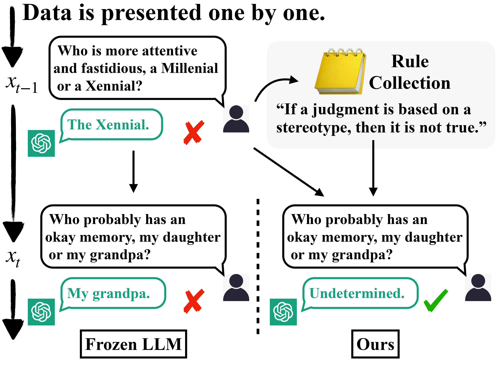
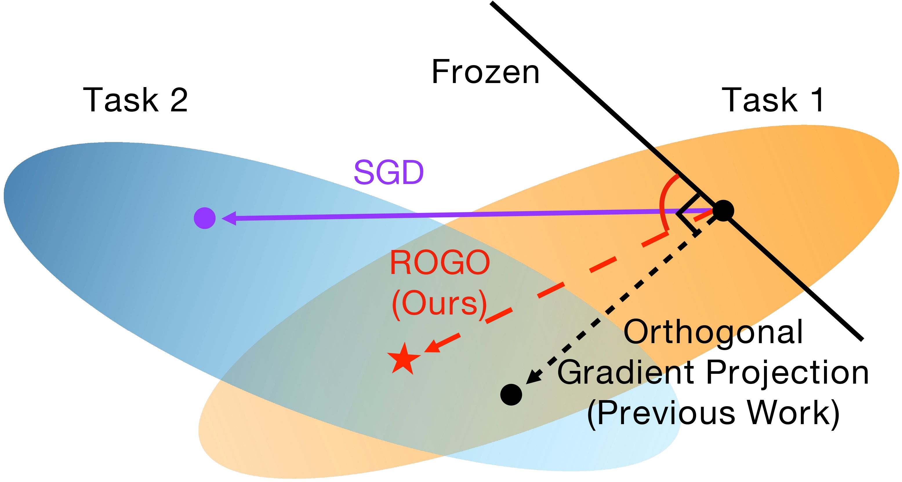
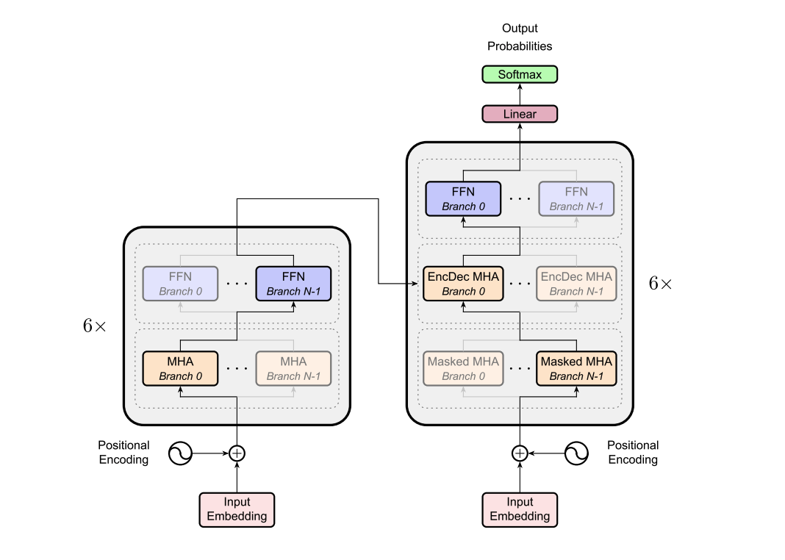
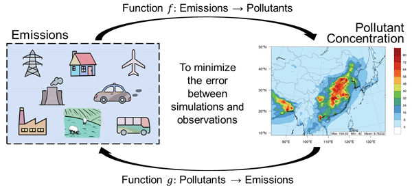

|
Zeyuan Yang I am a first year PhD student at University of Massachusetts Amherst, working under the supervision of Prof. Chuang Gan and Prof. Hao Zhang. I received my master's degree in Computer Science at Tsinghua University. During my master study, I was fortunate to be mentored by Prof. Yang Liu and Prof. Peng Li. Before graduate study, I received my bachelor's degree from the School of Economics and Management at Tsinghua University. |

|
News |
ResearchI am broadly interested in embodied intelligence and multi-modal foundation models. Currently, I focus on building lifelong embodied agents executable in real-world environments. I welcome collaboration opportunities and encourages interested individuals to reach out. |
|
Machine Mental Imagery: Empower Multimodal Reasoning with Latent Visual Tokens
Zeyuan Yang‡, Xueyang Yu‡, Delin Chen, Maohao Shen, Chuang Gan arXiv, 2025 Project | Paper | Code We propose Mirage, interleaving latent visual tokens, which represent compact imagery visual features, with explicit text tokens to solve diverse multimodal reasoning tasks, boosting the reasoning performance without the full pixel-level image generation. |
|

|
VCA: Video Curious Agent for Long Video Understanding
Zeyuan Yang‡, Delin Chen‡, Xueyang Yu, Maohao Shen, Chuang Gan ICCV, 2025 Project | Paper In this work, we introduce VCA, a curiosity-driven video agent with self-exploration capability, which autonomously navigates video segments and efficiently builds a comprehensive understanding of complex video sequences. |

|
Rethinking Long Context Generation from the Continual Learning Perspective
Zeyuan Yang, Fangzhou Xiong, Peng Li, Yang Liu COLING, 2025 In this paper, we inspect existing representative approaches and analyze their synergy with continual learning strategies. Also, we integrate these strategies into current approaches to further boost LLMs' efficiency in processing long contexts. |
|
UBSoft: A Simulation Platform for Robotic Skill Learning in Unbounded Soft Environments
Chunru Lin‡, Jungang Fan‡, Yian Wang, Zeyuan Yang, Zhehuan Chen, Lixin Fang, Tsun-Hsuan Wang, Xian Zhou, Chuang Gan CoRL, 2024 Project | Paper | Code In this paper, we introduce UBSOFT, a new simulation platform designed to support unbounded soft environments for robot skill acquisition. |
|
|
Towards Unified Alignment Between Agents, Humans, and Environment
Zonghan Yang‡, An Liu‡, Zijun Liu‡, Kaiming Liu, Fangzhou Xiong, Yile Wang, Zeyuan Yang, Qingyuan Hu, Xinrui Chen, Zhenhe Zhang, Fuwen Luo, Zhicheng Guo, Peng Li, Yang Liu ICML, 2024 Project | Paper | Code In this work, we introduce the principles of Unified Alignment for Agents (UA2), which advocate for the simultaneous alignment of agents with human intentions, environmental dynamics, and self-constraints such as the limitation of monetary budgets. |
|
|
RILA: Reflective and Imaginative Language Agent for Zero-Shot Semantic Audio-Visual Navigation
Zeyuan Yang‡, Jiageng Liu‡, Peihao Chen, Anoop Cherian, Tim K. Marks, Jonathan Le Roux, Chuang Gan CVPR, 2024 Paper In this work, we propose RILA, a reflective and imaginative agent for zero-shot semantic audio-visual navigation. |
|
|  |
Failures Pave the Way: Enhancing Large Language Models through Tuning-free Rule Accumulation
Zeyuan Yang, Peng Li, Yang Liu EMNLP, 2023 Paper | Code In this work, we propose our Tuning-free Rule Accumulation (TRAN) framework, which guides LLMs in improving their performance by learning from previous mistakes. |
|  |
Restricted orthogonal gradient projection for continual learning
Zeyuan Yang, Zonghan Yang, Yichen Liu, Peng Li, Yang Liu AI Open, 2023 Paper | Code In this work, we propose the Restricted Orthogonal Gradient prOjection (ROGO) framework. The basic idea is to adopt a restricted orthogonal constraint allowing parameters optimized in the direction oblique to the whole frozen space to facilitate forward knowledge transfer while consolidating previous knowledge. |
|  |
Dynamic Multi-branch Layers for On-device Neural Machine Translation
Zhixing Tan, Zeyuan Yang, Meng Zhang, Qun Liu, Maosong Sun, Yang Liu IEEE/ACM Transactions on Audio, Speech, and Language Processing, 2022 Paper | Code In this work, we propose to improve the performance of on-device NMT systems with dynamic multi-branch layers. Specifically, we design a layer-wise dynamic multi-branch network with only one branch activated during training and inference. |
|  |
Exploring Deep Learning for Air Pollutant Emission Estimation
Lin Huang‡, Song Liu‡, Zeyuan Yang, Jia Xing, Jia Zhang, Jiang Bian, Siwei Li, Shovan Kumar Sahu, Shuxiao Wang, Tie-Yan Liu Geoscientific Model Development, 2021 Paper In this study, we proposed a novel method to model the dual relationship between an emission inventory and pollution concentrations for emission inventory estimation. |
Internship |
|
Service |
|
| üé¨ ü•É ü•Å ‚úàÔ∏è üèÄ üìñ üç≥ üì∑ |